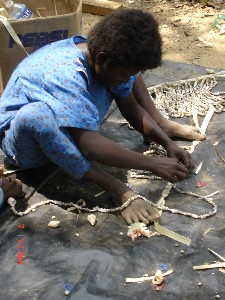
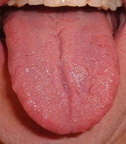
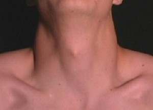
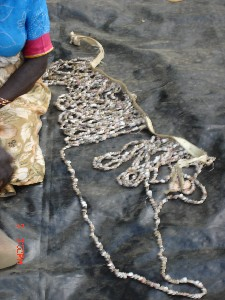
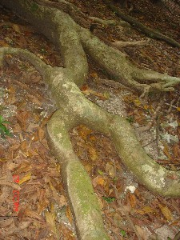
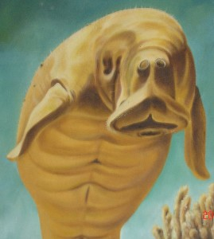
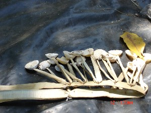
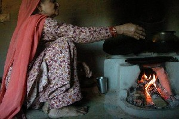
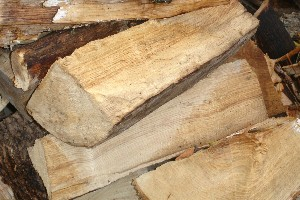

Ɑ - ɑ
ɑ- आ- CLT क्लिटिक. clitic, third singular subject (exclusive); तृतीय एकवचन कर्तावाचक क्लिटिक (अनन्य).  ɑ-surme ɛrbuŋoi bi आसुरमे ऐरबूङोई बी. Surmai looks beautiful. सुरमई सुंदर लगती है।. SD: grammar, व्याकरण.
ɑ-surme ɛrbuŋoi bi आसुरमे ऐरबूङोई बी. Surmai looks beautiful. सुरमई सुंदर लगती है।. SD: grammar, व्याकरण.
-ɑ -आ CASE का. genitive case (inalienable); सम्बंध कारक (अहस्तान्तरित). ʈʰ-ɑ-mimi ठामीमी. my mother. मेरी मां. SD: grammar, व्याकरण. NT: postnominal. कारक चिह्न।.
ɑbɑtr आबात्र MORPH: ɑb-ɑtr. Etym: Bale; बाले. N सं. fatherhood; पितृत्व. SD: kin term, सम्बंधी वाचक शब्दावली.
ɑbcuɡɑ आबचूगा MORPH: ɑb-cuɡɑ. Etym: Bale; South Andaman; बाले; दक्षिणी अण्डमान. N सं. married man; विवाहित पुरुष. SD: life, जीवन, people, लोग.
ɑbcupɑl आबचूपाल MORPH: ɑb-cupɑl. Etym: Bale; South Andaman; बाले; दक्षिणी अण्डमान. N सं. married woman; विवाहित महिला. SD: life, जीवन, people, लोग.
ɑbdɑrekɑ आबदारेका MORPH: ɑb-dɑrekɑ. Etym: Bale; बाले. N सं. infant; शिशु. SD: life, जीवन, people, लोग.
ɑbikkirɑːsenneː आबीक्कीराऽसेन्नेऽ MORPH: ɑ-bikkirɑːsenneː. N सं. a kind of scorpion; एक प्रकार का बिच्छू. SD: insect & invertebrate, कीट-पतंग एवं अरीढ़ जीव.
ɑbiŋɑ आबीङा Etym: Bale; South Andaman; बाले; दक्षिणी अण्डमान. N सं. spouse; जीवन-साथी; पति या पत्नी. SD: kin term, सम्बंधी वाचक शब्दावली.
ɑbliɡɑ आब्लीगा Etym: Bale; बाले. N सं. infant; शिशु. SD: life, जीवन, people, लोग.
ɑcɑrʈɔy आचारटौय MORPH: ɑ-cɑrʈɔy. N सं. collar bone; हंसली की हड्डी. ʈʰ-ɑ-cɑrʈɔy ठाचारटौय. my collar bone. मेरी हँसली की हड्डी. SD: body part term, शारीरिक अंग शब्दावली.
ɑcekʰuiʈɔe आचेखूईटौए MORPH: ɑ-cekʰui-ʈɔe. N सं. bone (below the neck); गर्दन के नीचे की हड्डी. ʈʰ-ɑ-cekʰui-ʈɔe ठाचेखूईटौए. my bone (below the neck). मेरी गर्दन के नीचे की हड्डी. SD: body part term, शारीरिक अंग शब्दावली.
ɑcit आचीत MORPH: ɑ-ci-t. VAR: ɑši आशी. WH-Q प्रश्न. whose; किसका. ɑ-ci-t tʰire be आचीत थीरे बे. Whose child is this? यह किसका बच्चा है? SD: interrogative, प्रश्नवाचक.
ɑcɔkʰɔ1 आचौखौ MORPH: ɑ-cɔkʰɔ. N सं. armpit; कांख. ʈʰ-ɑ-cɔkʰɔ ठाचौखौ. my armpit. मेरी कांख. SD: body part term, शारीरिक अंग शब्दावली. SEE: ɑcɔkʰɔ2 ‘side’ ‘तरफ़ आचौखौhm:{2}’.
 ɑcɔkʰɔ2 आचौखौ MORPH: ɑ-cɔkʰɔ. VAR: ɑcɔkʰo आचौखो. N सं. side; तरफ़.
ɑcɔkʰɔ2 आचौखौ MORPH: ɑ-cɔkʰɔ. VAR: ɑcɔkʰo आचौखो. N सं. side; तरफ़.  ʈʰɑ-cɔkʰo ठाचौखो. side of the ribcage. पसली की बगल वाली हड्डी. SD: body part term, शारीरिक अंग शब्दावली. SEE: ercɔk ‘face’ ‘चेहरा एरचौक ’; ɑcɔkʰɔ1 ‘armpit’ ‘कांख आचौखौhm:{1}’.
ʈʰɑ-cɔkʰo ठाचौखो. side of the ribcage. पसली की बगल वाली हड्डी. SD: body part term, शारीरिक अंग शब्दावली. SEE: ercɔk ‘face’ ‘चेहरा एरचौक ’; ɑcɔkʰɔ1 ‘armpit’ ‘कांख आचौखौhm:{1}’.
ɑɖi आडी MORPH: ɑ-ɖi. DEIXIS डीक्सीस. this one; ये वाला. SD: reference, संदर्भ.
ɑɖix आडीख N सं. god; देवता. SD: mythology, पौराणिक.
ɑjilli आजिल्ली VAR: ɑjili आजिली. N सं. lass, young female who has attained puberty; किशोरी. SD: life, जीवन, people, लोग.
ɑjuro1 आजूरो N सं. goddess; देवी. SD: mythology, पौराणिक. NT: The goddess who lives in a forest and eats human flesh. जंगल में वास करने वाली नर-भक्षी देवी।. SEE: ɑjuro2 ‘spider’ ‘मकड़ी आजूरोhm:{2}’.
ɑjuro2 आजूरो N सं. spider; मकड़ी. SD: insect & invertebrate, कीट-पतंग एवं अरीढ़ जीव. SEE: ɑjuro1 ‘goddess’ ‘देवी आजूरोhm:{1}’.
ɑk- आक- CLT क्लिटिक. third clitic; तृतीय क्लिटिक. SD: grammar, व्याकरण.
-ɑk -आक CASE का. directional case marker used as postnominal; दिशात्मक विभक्ति जो संज्ञा के बाद प्रयोग होती है. ɑ-joe ɑ-toŋ ɲyo-ɑk cɔnni-b-om आजोए आतोङ ञ्योआक चौन्नीबोम. Joe and Tong went home. जो और तोंग घर गए।. SD: direction, दिशा, grammar, व्याकरण.
ɑkɑ- आका- CLT क्लिटिक. clitic, third singular subject or object (genitive); तृतीय एकवचन कर्तावाचक या कर्मवाचक क्लिटिक (अनन्य). ʈʰu du ɑkɑ-tɛkʰo-bi ikjirɑ ठू दू आकातैखो बी ईक्जीरा. I spoke his language. मैंने उसकी भाषा बोली।. SD: grammar, व्याकरण.
ɑkɑberetɑrɑkɑmo आकाबेरेताराकामो MORPH: ɑkɑ-ber-et-ɑrɑ-kɑmo. N सं. one who talks about himself/herself only; जो अपने बारे में बोलता रहता है. SD: attribute, विशेषता.
ɑkɑbiŋe आकाबीङे MORPH: ɑkɑ-biŋ-e. V क्रि. listen; सुनो. SEE: ɖuoc ‘hear’ ‘सुनना डूओच ’.
ɑkɑboitercek आकाबोईतेरचेक MORPH: ɑkɑ-bo-i-tercek. ADJ वि. kind; दयालु. SD: attribute, विशेषता.
ɑkɑbolilu आकाबोलीलू MORPH: ɑkɑ-bol-i-lu. N सं. chest, of dugong; डूगोंग की छाती. SD: body part term, शारीरिक अंग शब्दावली.
ɑkɑbuɑ आकाबूआ MORPH: ɑkɑ-buɑ. Etym: Bale; South Andaman; बाले; दक्षिणी अण्डमान. N सं. brother-in-law; sister-in-law; साला या जीजा (ससुराल के समकक्षी रिश्ते); साली. SD: kin term, सम्बंधी वाचक शब्दावली.
ɑkɑcɑ आकाचा N सं. discarded dried garbage; फेंका हुआ सूखा कूड़ा-कचरा. SD: waste product, कूड़ा-कचरा.
ɑkɑcɑe आकाचाए N सं. poison; ज़हर. SD: natural environment, प्राकृतिक वातावरण.
ɑkɑcɑpʰɔŋ आकाचाफौङ MORPH: ɑkɑ-cɑ-pʰɔŋ. N सं. one who knows everything; अंतरयामी. SD: people, लोग.
ɑkɑːceke आकाऽचेके MORPH: ɑkɑː-ceke. V क्रि. follow; accompany; पीछा करना; साथ जाना.
 ɑkɑcɛʈʰi आकाचैठी MORPH: ɑkɑ-cɛ-ʈʰi. N सं. courtyard of a house; घर का आंगन. SD: habitat, रहन-सहन.
ɑkɑcɛʈʰi आकाचैठी MORPH: ɑkɑ-cɛ-ʈʰi. N सं. courtyard of a house; घर का आंगन. SD: habitat, रहन-सहन.
ɑkɑcɔkʰuirɑbelo आकाचौखूईराबेलो MORPH: ɑkɑ-cɔkʰui-rɑbelo. N सं. ring finger; अनामिका. SD: body part term, शारीरिक अंग शब्दावली.
ɑkɑcɔrok आकाचौरोक MORPH: ɑkɑ-cɔrok. CONJ संयो. instead; बल्कि. SD: conjunct, संयोजक.
 ɑkɑekʰe1 आकाएखे MORPH: ɑkɑ-ekʰe. Etym: Bo; बो. N सं. liar; झूठा. ɑkɑ-ekʰe-ʈɛʈ-lɑo आकाएखेटैटलाओ. This foreigner is a liar. यह विदेशी झूठा है।. SD: attribute, विशेषता. SEE: ɑkɑekʰe2 ‘useless fellow’ ‘बेकार आदमी आकाएखेhm:{2}’.
ɑkɑekʰe1 आकाएखे MORPH: ɑkɑ-ekʰe. Etym: Bo; बो. N सं. liar; झूठा. ɑkɑ-ekʰe-ʈɛʈ-lɑo आकाएखेटैटलाओ. This foreigner is a liar. यह विदेशी झूठा है।. SD: attribute, विशेषता. SEE: ɑkɑekʰe2 ‘useless fellow’ ‘बेकार आदमी आकाएखेhm:{2}’.
 ɑkɑekʰe2 आकाएखे MORPH: ɑkɑ-ekʰe. Etym: Bo; बो. N सं. useless fellow; बेकार आदमी. SD: attribute, विशेषता. SEE: ɑkɑekʰe1 ‘liar’ ‘झूठा आकाएखेhm:{1}’.
ɑkɑekʰe2 आकाएखे MORPH: ɑkɑ-ekʰe. Etym: Bo; बो. N सं. useless fellow; बेकार आदमी. SD: attribute, विशेषता. SEE: ɑkɑekʰe1 ‘liar’ ‘झूठा आकाएखेhm:{1}’.
 ɑkɑikʰe आकाईखे MORPH: ɑkɑ-ikʰe. V क्रि. open; खोलना. tiruluʈʰ ɑkɑiko तीरूलूठ आकाईको. The window opened. खिड़की खुल गई।.
ɑkɑikʰe आकाईखे MORPH: ɑkɑ-ikʰe. V क्रि. open; खोलना. tiruluʈʰ ɑkɑiko तीरूलूठ आकाईको. The window opened. खिड़की खुल गई।.
ɑkɑile आकाईले MORPH: ɑkɑ-ile. V क्रि. return; लौटना.
ɑkɑjirɑ1 आकाजीरा MORPH: ɑkɑ-jirɑ. N सं. chilli; मिर्च. SD: edible item, खाद्य सामग्री. SEE: ɑkɑjirɑ2 ‘spicy’ ‘तीखा आकाजीराhm:{2}’.
ɑkɑjirɑ2 आकाजीरा MORPH: ɑkɑ-jirɑ. ADJ वि. spicy; तीखा. SD: attribute, विशेषता. SEE: ɑkɑjirɑ1 ‘chilli’ ‘मिर्च आकाजीराhm:{1}’.
 ɑkɑjire आकाजीरे VAR: ɑkɑjirɑ आकाजीरा. V क्रि. abuse; गाली देना.
ɑkɑjire आकाजीरे VAR: ɑkɑjirɑ आकाजीरा. V क्रि. abuse; गाली देना.
 ɑkɑjiretercek आकाजीरेतेरचेक MORPH: ɑkɑ-jire-tercek. N सं. one who has a foul mouth; गाली-गलौज करने वाला. SD: attribute, विशेषता.
ɑkɑjiretercek आकाजीरेतेरचेक MORPH: ɑkɑ-jire-tercek. N सं. one who has a foul mouth; गाली-गलौज करने वाला. SD: attribute, विशेषता.
ɑkɑjom आकाजोम MORPH: ɑkɑ-jom. ADJ वि. greedy; लालची. SD: attribute, विशेषता.
ɑkɑkɑɖɑkɑ आकाकाडाका MORPH: ɑkɑ-kɑɖɑkɑ. N सं. adolescent; किशोर. SD: life, जीवन.
ɑkɑkel आकाकेल MORPH: ɑkɑ-kel. N सं. miser; कंजूस. SD: attribute, विशेषता.
ɑkɑker आकाकेर MORPH: ɑkɑ-ker. N सं. voice; आवाज़. ɑkɑ-ker-cɑe आकाकेरचाए. bad voice. ख़राब आवाज़. SD: attribute, विशेषता.
ɑkɑkertotmu आकाकेरतोतमू MORPH: ɑkɑ-ker-tot-mu. N सं. dumb, lit. speechless; गूंगा. SD: attribute, विशेषता.
ɑkɑkʰimilkolot आकाखीमील्कोलोत MORPH: ɑkɑ-kʰimil-kolot. N सं. the name which is given after the turtle-eating ceremony; कछुआ खाने वाला, कछुआ खाने की रस्म के बाद दिया जाने वाला नाम. SD: ritual, रीति-रिवाज़.
ɑkɑkʰimilkʰui आकाखीमीलखूई MORPH: ɑkɑ-kʰimil-kʰui. VAR: ɑkkɑːximil xuːyi आक्काऽखीमील खूऽयी. N सं. young boy; जवान लड़का. SD: people, लोग.
ɑkɑkɔpʰo आकाकौफो MORPH: ɑkɑ-kɔpʰo. V क्रि. sprout; कल्ले निकलना.  kʰider-tɑt-kɔpʰo खीदेरतातकौफो. New sprouts are coming out of coconut tree. नारियल के कल्ले निकल रहे हैं।.
kʰider-tɑt-kɔpʰo खीदेरतातकौफो. New sprouts are coming out of coconut tree. नारियल के कल्ले निकल रहे हैं।.
ɑkɑkuɑm आकाकूआम MORPH: ɑkɑ-kuɑm. Etym: Bale; South Andaman; बाले; दक्षिणी अण्डमान. N सं. relatives; रिश्तेदार. SD: kin term, सम्बंधी वाचक शब्दावली.
ɑkɑle1 आकाले VAR: ɑːkɑːle आऽकाऽले. N सं. death; मृत्यु. SD: death, मृत्यु सम्बंधी, life, जीवन. SEE: ɑkɑle2 ‘die’ ‘मरना आकालेhm:{2}’.
ɑkɑle2 आकाले VAR: ɑːkɑːle आऽकाऽले. V क्रि. die; मरना. SEE: ɑkɑle1 ‘death’ ‘मृत्यु आकालेhm:{1}’.
ɑkɑlekɔ आकालेकौ MORPH: ɑkɑle-k-ɔ. VAR: ɑkɑle-k-o आकालेको. ADJ वि. dead; मरा हुआ. SD: life, जीवन.
ɑkɑmɑːy आकामाऽय MORPH: ɑkɑ-mɑːy. N सं. oldest man in the tribe; जनजाति में सबसे वृद्ध व्यक्ति. SD: people, लोग.
ɑkɑmbil आकामबील MORPH: ɑkɑ-m-bil. ADJ वि. stationary; स्थिर. SD: attribute, विशेषता.
ɑkɑmimitɑrɑtob आकामीमीतारातोब MORPH: ɑkɑ-mimi-tɑrɑ-tob. N सं. grandmother, paternal or maternal; दादी या नानी. SD: kin term, सम्बंधी वाचक शब्दावली.
 ɑkɑmimitɑrɑtɔm आकामीमीतारातौम MORPH: ɑkɑ-mimi-tɑrɑ-tɔm. VAR: ɑkɑ-mimi-tɑrɑ-tom आकामीमीतारातोम. N सं. lady, elderly; oldest woman in the community; कोई भी वृद्ध महिला; समुदाय की सबसे बुजुर्ग महिला. SD: people, लोग. NT: Equivalent kinship term for grandmother. दादी या नानी सम्बोधन का समरूप।.
ɑkɑmimitɑrɑtɔm आकामीमीतारातौम MORPH: ɑkɑ-mimi-tɑrɑ-tɔm. VAR: ɑkɑ-mimi-tɑrɑ-tom आकामीमीतारातोम. N सं. lady, elderly; oldest woman in the community; कोई भी वृद्ध महिला; समुदाय की सबसे बुजुर्ग महिला. SD: people, लोग. NT: Equivalent kinship term for grandmother. दादी या नानी सम्बोधन का समरूप।.
ɑkɑmu आकामू N सं. dumb; गूंगा. SD: attribute, विशेषता.
ɑkɑndukolɔt आकान्दूकोलौत MORPH: ɑkɑndu-kolɔt. Etym: North Andaman; उत्तरी अण्डमान. N सं. girl, young; युवती. SD: people, लोग.
ɑkɑnɖuk आकान्डूक V क्रि. attain puberty age (for females); लड़कियों का यौवनारंभ होना. monɑ ɑkɑnɖuko मोना आकान्डूको. Mona has grown up. मोना जवान हो गई है।.
ɑkɑntɛšɑmo आकान्तैशामो MORPH: ɑkɑn-tɛs-̌ɑmo. V क्रि. become half; आधा होना. ɖulo bikɑm ɑkɑntɛšɑmo ʈʰut cɔnibɔm डूलो बीकाम आकान्तैशामो ठूत चौनीबौम. I will go after a fortnight. मैं एक पखवाड़े के बाद जाऊंगा।.
ɑkɑŋkɑle आकाङकाले V क्रि. walk; चलना.
ɑkɑɲɑ आकाञा MORPH: ɑkɑ-ɲɑ. VAR: ɑtɑɲyɑ आताञ्या. V क्रि. feed; खिलाना. ɑkɑmimi utuntʰiretɑ ɑkɑɲɑ आकामीमी ऊतून्थीरेता आकाञा. The mother is feeding her child. मां बच्चे को खिला रही है।.
ɑkɑop आकाओप MORPH: ɑkɑ-op. Etym: Jeru; जेरू. N सं. a person who is under ritualistic diet restrictions or on fast during the post-puberty period; किशोरावस्था में परंपरा के अनुसार व्रत रखने वाला व्यक्ति या उपवासी. SD: ritual, रीति-रिवाज़.
ɑkɑpʰitcɔrok आकाफीतचौरोक MORPH: ɑkɑ-pʰit-cɔrok. N सं. area behind the knees; घुटनों का पिछला हिस्सा. ʈʰ-ɑkɑ-pʰit-cɔrok ठाकाफीत्चौरोक. area behind my knees. मेरे घुटनों के पीछे का हिस्सा. SD: body part term, शारीरिक अंग शब्दावली. SEE: ɛcorɔk ‘knee’ ‘घुटना ऐचोरौक ’.
ɑkɑpʰoŋ आकाफोङ MORPH: ɑkɑ-pʰoŋ. N सं. mouth; cavity; मुंह; कोटर. SD: body part term, शारीरिक अंग शब्दावली. NT: Used for any object with a hole or cavity. छेद वाली कोई वस्तु।.
ɑkɑpʰup आकाफूप MORPH: ɑkɑ-pʰup. N सं. saliva; लार. SD: body product, शरीर से उत्पन्न.
 ɑkɑrɑp1 आकाराप MORPH: ɑ-kɑrɑp. ADV क्रि वि. behind; पीछे. SD: space, अन्तरिक्ष. SEE: ɑkɑrɑp2 ‘waist’ ‘कमर आकारापhm:{2}’.
ɑkɑrɑp1 आकाराप MORPH: ɑ-kɑrɑp. ADV क्रि वि. behind; पीछे. SD: space, अन्तरिक्ष. SEE: ɑkɑrɑp2 ‘waist’ ‘कमर आकारापhm:{2}’.
 ɑkɑrɑp2 आकाराप MORPH: ɑ-kɑrɑp. N सं. waist; कमर.
ɑkɑrɑp2 आकाराप MORPH: ɑ-kɑrɑp. N सं. waist; कमर.  ʈʰɑ-rɑ-kɑrɑp ठाराकाराप. my back. मेरी कमर. SD: body part term, शारीरिक अंग शब्दावली. SEE: ɑkɑrɑp1 ‘behind’ ‘पीछे आकारापhm:{1}’.
ʈʰɑ-rɑ-kɑrɑp ठाराकाराप. my back. मेरी कमर. SD: body part term, शारीरिक अंग शब्दावली. SEE: ɑkɑrɑp1 ‘behind’ ‘पीछे आकारापhm:{1}’.
 |
ɑkɑšɔʈ आकाशौट MORPH: ɑkɑ-šɔʈ. V क्रि. thread; माला पिरोना.
ɑkɑtekʰocɑe आकातेखोचाए MORPH: ɑkɑ-tekʰocɑe. ADJ वि. rude; अशिष्ट. SD: attribute, विशेषता.
ɑkɑtɛkʰotɑrɑkɑmo आकातैखोताराकामो MORPH: ɑkɑ-tɛkʰo-tɑrɑ-kɑmo. ADJ वि. talkative; बातूनी. SD: attribute, विशेषता.
ɑkɑtɛkʰotercek आकातैखोतेरचेक MORPH: ɑkɑ-tɛkʰo-ter-cek. ADJ वि. rubbish; बकवास. SD: attribute, विशेषता.
ɑkɑtʰitul आकाथीतूल MORPH: ɑkɑ-tʰitul. V क्रि. keep quiet; चुप रहना.
ɑkɑtoɔ आकातोऔ MORPH: ɑkɑ-toɔ. V क्रि. choke; गले में फंसना.
ɑkɑtutlup आकातूतलूप MORPH: ɑkɑ-tut-lup. ADJ वि. greedy; लालची. SD: attribute, विशेषता.
 ɑkɑʈɑ आकाटा MORPH: ɑ-kɑʈɑ. N सं. daughter/ young girl; बेटी/ जवान लड़की.
ɑkɑʈɑ आकाटा MORPH: ɑ-kɑʈɑ. N सं. daughter/ young girl; बेटी/ जवान लड़की.  ʈʰut tʰire ɑkɑʈɑ-nel tɑpʰul ठूत थीरे आकाटानेल ताफूल. I have two daughters. मेरी दो बेटियां हैं।. SD: kin term, सम्बंधी वाचक शब्दावली.
ʈʰut tʰire ɑkɑʈɑ-nel tɑpʰul ठूत थीरे आकाटानेल ताफूल. I have two daughters. मेरी दो बेटियां हैं।. SD: kin term, सम्बंधी वाचक शब्दावली.
ɑkɑʈɑŋɑ आकाटाङा MORPH: ɑkɑ-ʈɑŋɑ. V क्रि. open mouth wide; मुंह चौड़ा खोलना.
 |
ɑkɑʈɑʈ आकाटाट MORPH: ɑkɑ-ʈɑʈ. VAR: ɑkɑ-tɑt आकातात. N सं. tongue; जीभ. ŋɑʈɑʈ ङाटाट. your tongue. तुम्हारी जीभ.  ʈʰɑtɑt ठातात. my tongue. मेरी जीभ. SD: body part term, शारीरिक अंग शब्दावली.
ʈʰɑtɑt ठातात. my tongue. मेरी जीभ. SD: body part term, शारीरिक अंग शब्दावली.
ɑkɑʈʰieke आकाठीएके MORPH: ɑkɑ-ʈʰieke. N सं. chatterbox; गपोड़. SD: attribute, विशेषता.
 ɑkɑʈʰoke आकाठोके VAR: ekɑʈʰoke एकाठोके. V क्रि. close; stop; बंद करना; रोकना. ʈʰu ekɑʈʰoke ठू एकाठोके. I close (something). मैं बंद (किसी चीज़ को) करता हूं।.
ɑkɑʈʰoke आकाठोके VAR: ekɑʈʰoke एकाठोके. V क्रि. close; stop; बंद करना; रोकना. ʈʰu ekɑʈʰoke ठू एकाठोके. I close (something). मैं बंद (किसी चीज़ को) करता हूं।.
ɑkɑʈopʰɑm आकाटोफाम MORPH: ɑkɑ-ʈopʰɑm. V क्रि. click the tongue; ज़ुबान चटखाना.
ɑkɑulu आकाऊलू MORPH: ɑkɑ-ulu. ADV क्रि वि. prior to; पहले से. nɑo-ɑkɑ-ulu- unci-ʈʰɑ cɑy-cɑʈɑ ɑrɑlisoko नाओ आका ऊलू ऊन्ची ठा चायचाटा आरालीसोको. Before Nao arrived I finished the work. नाओ के पहुंचने से पहले मैंने काम कर दिया।. SD: time, समय.
ɑkɑyɑbɑ आकायाबा MORPH: ɑkɑ-yɑbɑ. Etym: Bea; बेया. N सं. fasting person, referring to a person who is under ritualistic diet restrictions or on fast during the post-puberty period; उपवासी. SD: ritual, रीति-रिवाज़.
ɑkɑyɑt आकायात MORPH: ɑkɑ-yɑt. Etym: Bale; South Andaman; बाले; दक्षिणी अण्डमान. N सं. relationship between parents and parents-in-law; समधी-समधिन का रिश्ता. SD: kin term, सम्बंधी वाचक शब्दावली.
 ɑker आकेर MORPH: ɑ-ker. N सं. throat; गला.
ɑker आकेर MORPH: ɑ-ker. N सं. throat; गला.  ʈʰɑ-ker ठाकेर. my throat. मेरा गला. SD: body part term, शारीरिक अंग शब्दावली.
ʈʰɑ-ker ठाकेर. my throat. मेरा गला. SD: body part term, शारीरिक अंग शब्दावली.
ɑketɔtʈɔy आकेतौत्टौय MORPH: ɑ-ketɔt-ʈɔy. N सं. trachea/ voice box; सांस की नली. ʈʰɑ-ketɔt-ʈɔy ठाकेतौत्टौय. my trachea or voice box. मेरी सांस की नली. SD: body part term, शारीरिक अंग शब्दावली.
 |
 ɑkɛr आकैर MORPH: ɑ-kɛr. VAR: ɑ-ker आकेर. N सं. neck; गर्दन.
ɑkɛr आकैर MORPH: ɑ-kɛr. VAR: ɑ-ker आकेर. N सं. neck; गर्दन.  meŋ-ɑ-kɛr मेङाकैर. our neck. हमारी गर्दन.
meŋ-ɑ-kɛr मेङाकैर. our neck. हमारी गर्दन.  ʈʰ-ɑ-kɛr-ʈɔe ठाकैरटौए. my neck bone. मेरी गर्दन की हड्डी. SD: body part term, शारीरिक अंग शब्दावली.
ʈʰ-ɑ-kɛr-ʈɔe ठाकैरटौए. my neck bone. मेरी गर्दन की हड्डी. SD: body part term, शारीरिक अंग शब्दावली.
 |
ɑkɛrʈoʈʈɔe आकैरटोट्टौए MORPH: ɑ-kɛr-ʈoʈʈɔe. VAR: ɑ-kɛrʈɔy आकैरटौय. N सं. adam’s apple; vocal cords; टेंटुआ, गले के नीचे का बोलने वाला हिस्सा.  ʈʰ-ɑ-kɛr-ʈoʈʈɔe ठाकैरटोट्टौए. my vocal cord (adam’s apple). मेरा टेंटुआ. SD: body part term, शारीरिक अंग शब्दावली.
ʈʰ-ɑ-kɛr-ʈoʈʈɔe ठाकैरटोट्टौए. my vocal cord (adam’s apple). मेरा टेंटुआ. SD: body part term, शारीरिक अंग शब्दावली.
ɑkkɑːcɛxuːyi आक्काऽचैखूऽयी MORPH: ɑkkɑː-cɛxuːyi. N सं. food pipe; आहारनली. SD: body part term, शारीरिक अंग शब्दावली.
ɑkkɑɖum आक्काडूम MORPH: ɑkkɑ-ɖum. N सं. puberty; यौवनारंभ. SD: life, जीवन.
ɑkkɑːjiːrɑː आक्काऽजीऽराऽ MORPH: ɑkkɑː-jiːrɑː. N सं. large intestine; बड़ी आंत. SD: body part term, शारीरिक अंग शब्दावली.
ɑkkɑːmɑːytɑrɑːtoŋ आक्काऽमाऽयताराऽतोङ MORPH: ɑkkɑː-mɑːy-tɑrɑː-toŋ. N सं. king; राजा. SD: people, लोग.
ɑkkɑːmimitɑrɑːtoŋ आक्काऽमीमीताराऽतोङ MORPH: ɑkkɑː-mimi-tɑrɑː-toŋ. N सं. queen; रानी. SD: people, लोग.
ɑkkɑːteyxoɸo आक्काऽतेयखोफो MORPH: ɑkkɑː-teyxo-ɸo. V क्रि. dump (something); फेंकना.
ɑkkɑtɔle आक्कातौले MORPH: ɑkkɑ-tɔl-e. V क्रि. add (something); जोड़ना.
ɑkkeːrcɑːy आक्केऽरचाऽय MORPH: ɑ-keːr-cɑːy. N सं. hiccup; हिचकी. ŋɑkkeːrcɑːy ङाक्केऽरचाऽय. your hiccup. तुम्हारी हिचकी. SD: illness, रोग.
ɑkkeːrtotlɔːcoŋ आक्केऽरतोतलौऽचोङ MORPH: ɑ-keːr-tot-lɔːcoŋ. N सं. uvula; अलिजिह्वा. ŋɑkkeːrtotlɔːcoŋ ङाक्केऽरतोतलौऽचोङ. your uvula. तुम्हारी अलिजिह्वा. SD: body part term, शारीरिक अंग शब्दावली.
ɑkop आकोप N सं. period, of abstinence from eating certain kinds of food items; कुछ प्रकार की खाद्य सामग्री नहीं खाने की समयावधि. SD: ritual, रीति-रिवाज़.
ɑlɑ आला Etym: Pujjukar; पुज्जूकर. VAR: ɑli आली. INTJ वि बो. interjection, for arrival; आने का विस्मयबोधक. SD: emotion, भावनात्मक. NT: In response to the question ‘Who is it?’. ‘कौन है?’ प्रश्न के जवाब में दिया गया उत्तर।.
ɑlɑe आलाए MORPH: ɑ-lɑe. VAR: er-lɑe एरलाए. N सं. palate; तालू.  ʈʰ-ɑ-lɑe ठालाए. my palate. मेरा तालू. SD: body part term, शारीरिक अंग शब्दावली.
ʈʰ-ɑ-lɑe ठालाए. my palate. मेरा तालू. SD: body part term, शारीरिक अंग शब्दावली.
ɑlɑːliyo आलाऽलीयो DEIXIS डीक्सीस. there (it) was; वहां (था). ɑxolɑːliy-o आखोलाऽलीयो. Was (he) there? क्या वह वहां था? SD: space, अन्तरिक्ष.
 ɑle आले VAR: ɑːle आऽले; ɑːlɛ आऽलै. N सं. lightning; बिजली की चमक. ɑlekom आलेकोम. There is lightning. बिजली चमक रही है।. ɑle-berɑ pʰɑʈɑkom आलेबेरा फाटाकोम. It is lightning heavily. बिजली ज़ोर से चमकती है।. SD: natural environment, प्राकृतिक वातावरण.
ɑle आले VAR: ɑːle आऽले; ɑːlɛ आऽलै. N सं. lightning; बिजली की चमक. ɑlekom आलेकोम. There is lightning. बिजली चमक रही है।. ɑle-berɑ pʰɑʈɑkom आलेबेरा फाटाकोम. It is lightning heavily. बिजली ज़ोर से चमकती है।. SD: natural environment, प्राकृतिक वातावरण.
ɑleɑ आलेआ ADV क्रि वि. slowly; धीरे से. SD: manner, रीतिवाचक.
ɑlekuruɖe आलेकूरूडे MORPH: ɑle-kuruɖe. N सं. thunderstorm; आंधी-तूफ़ान. SD: natural environment, प्राकृतिक वातावरण.
ɑlɛmo आलैमो N सं. uvula; अलिजिह्वा. ʈʰ-ɑ-lɛmo ठालैमो. my uvula. मेरी अलिजिह्वा. SD: body part term, शारीरिक अंग शब्दावली.
ɑm- आम- CLT क्लिटिक. reflexive clitic; निजवाचक या आत्मवाचक. ɑ-tʰire-nu nɑrɑm-lišo bošo-b-o आथीरेनू नारामलीशो बोशोबो. The children hit their sisters. बच्चों ने अपनी बहनों को मारा।. SD: grammar, व्याकरण.
ɑmɑe आमाए MORPH: ɑ-mɑe. VAR: ɑmɑi आमाई. MORPH: ɑ-mɑi. N सं. father; पिता.  ʈʰɑ mɑe din toyɑ ʈʰi ekjirɑ kɔm ठा माए दीन तोया ठी एक्जीरा कौम. as my father told me I did. जैसा मेरे पापा ने बताया, वैसा मैंने किया।. ɑkɑ-mɑi आकामाई. his/her father. उसके पिता. SD: kin term, सम्बंधी वाचक शब्दावली.
ʈʰɑ mɑe din toyɑ ʈʰi ekjirɑ kɔm ठा माए दीन तोया ठी एक्जीरा कौम. as my father told me I did. जैसा मेरे पापा ने बताया, वैसा मैंने किया।. ɑkɑ-mɑi आकामाई. his/her father. उसके पिता. SD: kin term, सम्बंधी वाचक शब्दावली.
ɑmɑecɔkʰɔkɔe आमाएचौखौकौए MORPH: ɑ-mɑe-cɔkʰɔ-kɔe. N सं. father’s elder brother; ताऊ, पिता के बड़े भाई. ʈʰɑ-mɑe-cɔkʰɔ-kɔe ठामाएचौखौकौए. my father’s elder brother. मेरे ताऊ; मेरे पिता के बड़े भाई. SD: kin term, सम्बंधी वाचक शब्दावली.
ɑmɑeotɲo आमाएओतञो MORPH: ɑ-mɑe-ot-ɲo. VAR: ɑ-mɑe-ɔt-ɲyɔ आमाएऔतञ्यौ. N सं. house, of our forefathers/ elder people; हमारे पूर्वजों/बुजुर्गों का घर. SD: habitat, रहन-सहन.
ɑmɑerɑsulutʰu आमाएरासूलूथू MORPH: ɑ-mɑe-rɑ-sulu-tʰu. VAR: ɑ-mɑi-rɑ-sulu-tʰu आमाईरासूलूथू. N सं. father’s younger brother; चाचा, पिता का छोटा भाई. ʈʰɑ-mɑe-rɑ-sulu-tʰu ठामाएरासूलूथू. my father’s younger brother. मेरा चाचा; मेरे पिता का छोटा भाई. SD: kin term, सम्बंधी वाचक शब्दावली.
ɑmɑeterbui आमाएतेरबूई MORPH: ɑ-mɑe-ter-bui. N सं. stepfather; सौतेला बाप. ʈʰɑ-mɑe-ter-bui ठामाएतेरबूई. my stepfather. मेरा सौतेला बाप. SD: kin term, सम्बंधी वाचक शब्दावली.
ɑmɑetɔɑtʰu आमाएतौआथू MORPH: ɑ-mɑe-tɔɑ-tʰu. VAR: ɑ-mɑi-cɔkɔ-kɔi आमाईचौकौकौई. N सं. father’s eldest brother; सबसे बड़े ताऊ, पिता के सबसे बड़े भाई. ʈʰɑ-mɑe-tɔɑ-tʰu ठामाएतौआथू. my father’s eldest brother. मेरे सबसे बड़े ताऊ. SD: kin term, सम्बंधी वाचक शब्दावली.
ɑmɑikɑʈʰɑmɑi आमाईकाठामाई MORPH: ɑ-mɑi-kɑ-ʈʰɑ-mɑi. N सं. father’s father; दादा, पिता के पिता. ʈʰɑ-mɑi-kɑ-ʈʰɑmɑi ठामाईकाठामाई. my grandfather. मेरा दादा. SD: kin term, सम्बंधी वाचक शब्दावली.
ɑmɑitoɑtʰumimi आमाईतोआथूमीमी MORPH: ɑ-mɑi-toɑ-tʰu-mimi. N सं. wife of father’s elder brother; ताई, पिता के बड़े भाई की पत्नी. ʈʰɑ-mɑi-toɑ-tʰu-mimi ठामाईतोआथूमीमी. my aunt, wife of my father’s elder brother. मेरी ताई. SD: kin term, सम्बंधी वाचक शब्दावली.
ɑmɑyexe आमाऽयेखे MORPH: ɑ-mɑy-exe. N सं. wife’s father; ससुर, पत्नी का पिता. SD: kin term, सम्बंधी वाचक शब्दावली.
ɑmbikʰir1 आम्बीखीर MORPH: ɑm-bikʰir. N सं. morning; सुबह. SD: time, समय. SEE: ɑmbikʰir2 ‘sunlight’ ‘सूरज की रोशनी आम्बीखीरhm:{2}’; -ɑmbikʰir3 ‘day; temporal adverb (bound)’ ‘दिन; समयसूचक क्रिया-विशेषण -आम्बीखीरhm:{3}’.
 |
ɑmbikʰir2 आम्बीखीर MORPH: ɑm-bikʰir. N सं. sunlight; सूरज की रोशनी. SD: natural environment, प्राकृतिक वातावरण. SEE: ɑmbikʰir1 ‘morning’ ‘सुबह आम्बीखीरhm:{1}’; -ɑmbikʰir3 ‘day; temporal adverb (bound)’ ‘दिन; समयसूचक क्रिया-विशेषण -आम्बीखीरhm:{3}’.
-ɑmbikʰir3 -आम्बीखीर MORPH: ɑm-bikʰir. ADV क्रि वि. day; temporal adverb (bound); दिन; समयसूचक क्रिया-विशेषण. ʈʰ-ɑmbikʰir jɑipure ʈʰut-conne-pʰo-be ठामबीखीर जाईपूरे ठूतचोन्ने फोबे. I will not go to Jaipur tomorrow. मैं कल जयपुर नहीं जाऊंगा।. ɑ-sulu ɑk-ɑmbikʰir stret-ɑk ot cɔne b-ɔ आसूलू आकाम्बीखीर स्त्रेताक ओत चौने बौ. Sulu went to Strait yesterday. सूलू कल स्ट्रेट गया था।. SD: time, समय. SEE: ɑmbikʰir1 ‘morning’ ‘सुबह आम्बीखीरhm:{1}’; ɑmbikʰir2 ‘sunlight’ ‘सूरज की रोशनी आम्बीखीरhm:{2}’.
ɑmɛ आमै Etym: Pujjukar; Bo; पुज्जूकर; बो. N सं. earth; पृथ्वी. SD: natural environment, प्राकृतिक वातावरण.
ɑmimi आमीमी MORPH: ɑ-mimi. N सं. mother; मां. ɑkɑ-mimi आकामीमी. his/her mother. उसकी मां. ʈʰ-ɑ-mimi ठामीमी. my mother. मेरी मां. SD: kin term, सम्बंधी वाचक शब्दावली.
ɑmimikɑmɑi आमीमीकामाई MORPH: ɑ-mimi-kɑ-mɑi. N सं. grandfather; नाना, मां का पिता. ʈʰ-ɑ-mimi-kɑ-mɑi ठामीमीकामाई. my grandfather; my mother’s father. मेरे नाना; मेरी मां का पिता. SD: kin term, सम्बंधी वाचक शब्दावली.
ɑmimikɑmimi आमीमीकामीमी MORPH: ɑmimi-kɑ-mimi. N सं. grandmother; नानी, मां की मां. ʈʰ-ɑ-mimi-kɑ-mimi ठामीमीकामीमी. my maternal grandmother. मेरी नानी. SD: kin term, सम्बंधी वाचक शब्दावली.
ɑmimirɑsulutʰui आमीमीरासूलूथूई MORPH: ɑ-mimi-rɑ-sulu-tʰui. N सं. mother’s younger sister; मौसी; मां की छोटी बहन. ʈʰ-ɑ-mimi-rɑ-sulu-tʰui ठामीमीरासूलूथूई. my mother’s younger sister. मेरी मौसी; मेरी मां की छोटी बहन. SD: kin term, सम्बंधी वाचक शब्दावली.
ɑmimitoɑtuebui आमीमीतोआतूएबूई MORPH: ɑ-mimi-toɑ-tue-bui. N सं. aunt, wife of mother’s brother; मामी, मां के भाई की पत्नी. ʈʰ-ɑ-mimi-toɑ-tue-bui ठा मीमी तोआ तूये बूई. my aunt, wife of mother’s brother. मेरी मामी. SD: kin term, सम्बंधी वाचक शब्दावली.
ɑmimixe आमीमीखे MORPH: ɑ-mimi-xe. N सं. wife’s mother; सास, पत्नी की मां. SD: kin term, सम्बंधी वाचक शब्दावली.
ɑmmɑːyesoːbe आम्माऽयेसोऽबे MORPH: ɑm-mɑːy-esoː-be. GEN सं का. his (hon.); उनका (आदरसूचक). SD: pronominal, सर्वनाम.
-ɑmo -आमो CONJ संयो. if, conditional; यदि; अगर. u ʈʰun-n-ci-k-ɑmo ʈʰu-i tɛrtɑ-k-om ऊ ठून्नचीकामो ठूई तैरताकोम. If he can come to me, he must come to me. अगर वह मेरे पास आ सकता है, तो उसे ज़रूर आना चाहिए।. SD: conjunct, संयोजक. NT: postverbal. उपसर्ग।.
ɑnɑpʰole आनाफोले N सं. a medicinal plant used for cooling the body; औषधीय पौधा जिससे शरीर को ठंडा किया जाता है. SD: flora, फूल-पत्ती, medicine, औषधी.
ɑŋkɑl आङकाल V क्रि. stroll; टहलना.
ɑŋkʰui आङखूई V क्रि. embrace; गले से लगाना. o-ek kɑk-ɑŋkʰui ओएक काकाङखूई. He embraces him. वह उसे गले लगाता है।.
ɑɲo आञो V क्रि. go to or come from home; घर आना या जाना.
ɑone आओने MORPH: ɑon-e. V क्रि. come; आना.
 ɑpʰoŋ आफोङ MORPH: ɑ-pʰoŋ. N सं. mouth; मुंह.
ɑpʰoŋ आफोङ MORPH: ɑ-pʰoŋ. N सं. mouth; मुंह.  ʈʰɑ-pʰoŋ ठाफोङ. my mouth. मेरा मुंह. SD: body part term, शारीरिक अंग शब्दावली.
ʈʰɑ-pʰoŋ ठाफोङ. my mouth. मेरा मुंह. SD: body part term, शारीरिक अंग शब्दावली.
ɑpʰup आफूप MORPH: ɑ-pʰup. N सं. saliva; लार. ʈʰ-ɑ-pʰup ठाफूप. my saliva. मेरी लार. SD: body product, शरीर से उत्पन्न.
-ɑrɑ -आरा CASE का. genitive case (inalienable); सम्बंध कारक (अहस्तान्तरित).  ʈʰ-ɑrɑ-lišu-pʰu ʈʰɑ-mimi-pʰu ठारालीशूफू ठामीमीफू. Neither my mother nor my sister (came). न तो मेरी मां आई न मेरी बहन।. SD: grammar, व्याकरण. NT: postnominal. कारक चिह्न।.
ʈʰ-ɑrɑ-lišu-pʰu ʈʰɑ-mimi-pʰu ठारालीशूफू ठामीमीफू. Neither my mother nor my sister (came). न तो मेरी मां आई न मेरी बहन।. SD: grammar, व्याकरण. NT: postnominal. कारक चिह्न।.
ɑrɑbɑlo1 आराबालो N सं. backyard; पिछवाड़ा. SD: habitat, रहन-सहन. SEE: ɑrɑbɑlo2 ‘behind/ towards the back’ ‘पीछे की तरफ़ आराबालोhm:{2}’.
ɑrɑbɑlo2 आराबालो DEIXIS डीक्सीस. behind someone; पीछे की तरफ़. ʈʰɑrɑbɑlo ठाराबालो. behind me. मेरे पीछे. SD: space, अन्तरिक्ष. SEE: ɑrɑbɑlo1 ‘backyard’ ‘पिछवाड़ा आराबालोhm:{2}’.
 ɑrɑbɑʈ आराबाट MORPH: ɑrɑ-bɑʈ. N सं. towards the feet; पायताने; पैरों के पास.
ɑrɑbɑʈ आराबाट MORPH: ɑrɑ-bɑʈ. N सं. towards the feet; पायताने; पैरों के पास.  ɑrɑbɑʈ-el-ɑkɑono आराबाटेल आकाओनो. He sat at his feet. वह पायताने बैठ गया।. SD: body part term, शारीरिक अंग शब्दावली.
ɑrɑbɑʈ-el-ɑkɑono आराबाटेल आकाओनो. He sat at his feet. वह पायताने बैठ गया।. SD: body part term, शारीरिक अंग शब्दावली.
 |
ɑrɑbel आराबेल N सं. waist girdle; करधनी. SD: costume & adornment, आभूषण एवं श्रृंगार.
ɑrɑbele आराबेले MORPH: ɑrɑ-bele. V क्रि. wear ornament like a girdle, the Andamanese shirbele; आभूषण (जैसे, कमरबंद) पहनना.
 ɑrɑbelo1 आराबेलो MORPH: ɑrɑ-belo. N सं. index finger; तर्जनी. SD: body part term, शारीरिक अंग शब्दावली. SEE: ɑrɑbelo2 ‘younger sister’ ‘छोटी बहन आराबेलोhm:{2}’.
ɑrɑbelo1 आराबेलो MORPH: ɑrɑ-belo. N सं. index finger; तर्जनी. SD: body part term, शारीरिक अंग शब्दावली. SEE: ɑrɑbelo2 ‘younger sister’ ‘छोटी बहन आराबेलोhm:{2}’.
 ɑrɑbelo2 आराबेलो MORPH: ɑrɑ-belo. N सं. younger sister; छोटी बहन. SD: kin term, सम्बंधी वाचक शब्दावली. SEE: ɑrɑbelo1 ‘index finger’ ‘तर्जनी आराबेलोhm:{1}’.
ɑrɑbelo2 आराबेलो MORPH: ɑrɑ-belo. N सं. younger sister; छोटी बहन. SD: kin term, सम्बंधी वाचक शब्दावली. SEE: ɑrɑbelo1 ‘index finger’ ‘तर्जनी आराबेलोhm:{1}’.
 ɑrɑbelošip आराबेलोशीप MORPH: ɑrɑ-belošip. Etym: Bo; बो. VAR: ɑrɑ-belɔšip आराबेलौशीप; ɑɽɑbelɔšiːp आड़ाबेलौशीऽप. N सं. youngest of the siblings; सबसे छोटा भाई या बहन. SD: kin term, सम्बंधी वाचक शब्दावली.
ɑrɑbelošip आराबेलोशीप MORPH: ɑrɑ-belošip. Etym: Bo; बो. VAR: ɑrɑ-belɔšip आराबेलौशीप; ɑɽɑbelɔšiːp आड़ाबेलौशीऽप. N सं. youngest of the siblings; सबसे छोटा भाई या बहन. SD: kin term, सम्बंधी वाचक शब्दावली.
ɑrɑbɛc आराबैच MORPH: ɑrɑ-bɛc. VAR: ɑrɑː-beːc आराऽबेऽच. N सं. feathers or tail of birds; पक्षियों के पंख या पूंछ. SD: bird, पक्षी.
ɑrɑːbɛːlokɑ आराऽबैऽलोका MORPH: ɑrɑː-bɛːlokɑ. N सं. younger brother-in-law, wife’s younger brother; छोटा साला. SD: kin term, सम्बंधी वाचक शब्दावली.
 |
ɑrɑbuco आराबूचो MORPH: ɑrɑ-buco. N सं. root; जड़. ʈoŋ-tɑrɑ-buco टोङ-तारा-बूचो. root of the tree. पेड़ की जड़. SD: flora, फूल-पत्ती.
 |
 ɑrɑcɑ आराचा MORPH: ɑrɑ-cɑ. N सं. nest; घोंसला. SD: bird, पक्षी.
ɑrɑcɑ आराचा MORPH: ɑrɑ-cɑ. N सं. nest; घोंसला. SD: bird, पक्षी.
ɑrɑcɑecɑʈo आराचाएचाटो MORPH: ɑrɑ-cɑe-cɑʈo. ADJ वि. slow learner (female); मंदमति से सीखने वाली. SD: attribute, विशेषता.
ɑrɑcɑetotlikʰu आराचाएतोत्लीखू MORPH: ɑrɑ-cɑe-tot-likʰu. N सं. active woman; चुस्त औरत. SD: attribute, विशेषता, people, लोग.
ɑrɑːccɔl आराऽच्चौल MORPH: ɑrɑː-ccɔl. N सं. light (natural); प्रकाश (प्राकृतिक). SD: natural environment, प्राकृतिक वातावरण.
ɑrɑcoi आराचोई MORPH: ɑrɑ-coi. N सं. outsiders; बाहरी लोग. SD: people, लोग.
ɑrɑcokʰoke आराचोखोके MORPH: ɑrɑ-cokʰo-ke. V क्रि. hang the canoe/boat from its back; डोंगी को पीछे से टांगना.
ɑrɑdoʈot आरादोटोत MORPH: ɑrɑ-doʈot. Etym: Bale; बाले. N सं. younger one; अनुज. SD: kin term, सम्बंधी वाचक शब्दावली.
 ɑrɑɖello आराडेल्लो MORPH: ɑrɑ-ɖello. V क्रि. be pregnant; गर्भवती होना.
ɑrɑɖello आराडेल्लो MORPH: ɑrɑ-ɖello. V क्रि. be pregnant; गर्भवती होना.
ɑrɑɖileʈmo आराडीलेटमो MORPH: ɑrɑ-ɖileʈmo. VAR: ɑrɑ-ɖileʈmo आराडीलेटमो; ɑrɑ-ɖiletmo आराडीलेतमो. N सं. bladder; मूत्राशय. ʈʰ-ɑrɑ-ɖileʈmo ठारा डीलेटमो. my bladder. मेरा मूत्राशय. SD: body part term, शारीरिक अंग शब्दावली. NT: Also, reference to the urinary bladder of the dugong, which is used as a ball to play with. डूगोंग के मूत्राशय के लिए भी प्रयोग होता है जिसको गेंद की तरह खेलने के लिए इस्तेमाल किया जाता है।.
 ɑrɑɖomo आराडोमो MORPH: ɑrɑ-ɖomo. N सं. scrotum; अण्डकोष.
ɑrɑɖomo आराडोमो MORPH: ɑrɑ-ɖomo. N सं. scrotum; अण्डकोष.  ʈʰ-ɑrɑ-ɖomo ठाराडोमो. my scrotum. मेरा अण्डकोष. SD: body part term, शारीरिक अंग शब्दावली.
ʈʰ-ɑrɑ-ɖomo ठाराडोमो. my scrotum. मेरा अण्डकोष. SD: body part term, शारीरिक अंग शब्दावली.
ɑrɑɖomoʈoʈkɔbɔ आराडोमोटोटकौबौ MORPH: ɑrɑ-ɖomo-ʈoʈ-kɔbɔ. N सं. skin of the scrotum; अण्डकोष की खाल. ʈʰɑrɑɖomoʈoʈkɔbɔ ठाराडोमोटोटकौबौ. skin of my scrotum. मेरे अण्डकोष की खाल. SD: body part term, शारीरिक अंग शब्दावली.
ɑrɑɛcɔke आराऐचौके MORPH: ɑrɑɛ-cɔke. V क्रि. act of taking everything out of water; पानी से सब बाहर निकालना.
ɑrɑili1 आराईली MORPH: ɑrɑ-ili. Etym: Jeru; जेरू. V क्रि. reach; पहुंचना; पहुंचाना. ɑrɑ-ili-ko आराईलीको. (S/he) reached. वह पहुंचा या पहुंची।. SEE: ɑrɑili2 ‘urine’ ‘पेशाब आराईलीhm:{2}’.
ɑrɑili2 आराईली MORPH: ɑrɑ-ili. N सं. urine; पेशाब. ʈʰɑrɑ-ili ठाराईली. my urine. मेरा पेशाब. SD: body product, शरीर से उत्पन्न. SEE: ɑrɑili1 ‘reach’ ‘पहुंचना; पहुंचाना आराईलीhm:{1}’.
 |
ɑrɑin आराईन MORPH: ɑrɑ-in. Etym: Bea; बेया. N सं. dugong; डूगोंग; पानी सूअर. SD: marine, समुद्री. SEE: kɔrɔiɲ1 ‘dugong’ ‘डूगोंग; पानी सूअर कौरौईञhm:{1}’.
ɑrɑiše आराईशे MORPH: ɑrɑ-iše. V क्रि. boil; उबालना. e-iši-ke एईशीके. He boiled it. उसने इसे उबाला।. iseːkke ईसेऽक्के. Please boil it. कृपया इसे उबाल दें।. iše-cɔm ईशे चौम. He will boil it. वह इसे उबालेगा।. SEE: ɑrɑšue ‘boil; cook’ ‘उबालना; पकाना आराशूए ’.
ɑrɑjio आराजीयो MORPH: ɑrɑ-jio. V क्रि. be scared of someone/ something; किसी से डरना. tʰu-ɑrɑ-jio थू आरा जीओ. I am scared of him. मैं उससे डरता हूं।.
ɑrɑjulɔ आराजूलौ MORPH: ɑrɑ-julɔ. V क्रि. slander; चुगली करना.
 |
ɑrɑjulu1 आराजूलू MORPH: ɑrɑ-julu. VAR: erɑjulu एराजूलू; juβu जूबू; ɑɽɑ-julu आड़ाजूलू. N सं. ornaments made of shell that are worn just below the knee; सीपी से बना हुआ आभूषण जिसे घुटनों के ठीक नीचे पहना जाता है. SD: costume & adornment, आभूषण एवं श्रृंगार. NT: In modern times, the word is also used to mean ‘clothes’. आजकल वस्त्र या परिधान के लिए भी प्रयुक्त होता है।. SEE: ɑrɑjulu2 ‘tail, of a bird’ ‘पूंछ, किसी पक्षी की आराजूलूhm:{2}’.
ɑrɑjulu2 आराजूलू MORPH: ɑrɑ-julu. N सं. tail, of a bird; किसी पक्षी की पूंछ. SD: body part term, शारीरिक अंग शब्दावली, bird, पक्षी. SEE: ɑrɑjulu1 ‘ornaments’ ‘आभूषण आराजूलूhm:{1}’.
ɑrɑkɑrɑpʈʰomo आराकारापठोमो MORPH: ɑrɑ-kɑrɑp-ʈʰomo. N सं. lower part of the waist; groin; कमर का निचला हिस्सा. ʈʰ-ɑrɑ-kɑrɑp-ʈʰomo ठाराकारापठोमो. lower part of my waist. मेरी कमर का निचला हिस्सा. SD: body part term, शारीरिक अंग शब्दावली.
ɑrɑkɑrɑpʈɔe आराकारापटौए MORPH: ɑrɑ-kɑrɑp-ʈɔe. N सं. backbone; रीढ़ की हड्डी. ʈʰ-ɑrɑ-kɑrɑp-ʈɔe ठारा काराप टौए. my backbone. मेरी रीढ़ की हड्डी. SD: body part term, शारीरिक अंग शब्दावली.
ɑrɑkɑtetercek आराकातेतेरचेक MORPH: ɑrɑ-kɑ-teter-cek. ADJ वि. lazy person; सुस्त आदमी. SD: attribute, विशेषता.
ɑrɑkɑʈɑ1 आराकाटा MORPH: ɑrɑ-kɑʈɑ. VAR: ɑrɑ-kɑːtɑ आराकाऽता. MORPH: ɑrɑ-kɑːtɑ. VAR: erɑ-kɑtɑ एराकाता. N सं. dwarf; नाटा. SD: attribute, विशेषता. SEE: ɑrɑkɑʈɑ2 ‘short (person)’ ‘छोटा (आदमी) आराकाटाhm:{2}’.
ɑrɑkɑʈɑ2 आराकाटा MORPH: ɑrɑ-kɑʈɑ. VAR: ɑrɑ-kɑːtɑ आराकाऽता. MORPH: ɑrɑ-kɑːtɑ. VAR: erɑ-kɑtɑ एराकाता. ADJ वि. short (person); छोटा (आदमी). SD: attribute, विशेषता. SEE: ɑrɑkɑʈɑ1 ‘dwarf’ ‘नाटा आराकाटाhm:{1}’.
ɑrɑːkonɔː आराऽकोनौऽ MORPH: ɑrɑː-konɔː. N सं. anchor; लंगर. SD: navigation, नौका संचालन.
ɑrɑlebik आरालेबीक MORPH: ɑrɑ-lebik. N सं. menstrual period; prepubescent girl; मासिक धर्म; यौवनारंभ से पहले की लड़की. SD: life, जीवन.
 ɑrɑlepʰɑ आरालेफा VAR: ɑrɑːlɛfɑː आराऽलैफाऽ. N सं. bachelor; spinster; widow; widower; कुंवारा; अविवाहित; विधवा; विधुर. ɑrɑlepʰɑ-kɑ आरालेफाका. someone’s widow. किसी की विधवा. SD: people, लोग.
ɑrɑlepʰɑ आरालेफा VAR: ɑrɑːlɛfɑː आराऽलैफाऽ. N सं. bachelor; spinster; widow; widower; कुंवारा; अविवाहित; विधवा; विधुर. ɑrɑlepʰɑ-kɑ आरालेफाका. someone’s widow. किसी की विधवा. SD: people, लोग.
ɑrɑlile आरालीले MORPH: ɑrɑ-lile. N सं. deep sleep; गहरी नींद. SD: state, अवस्था.
 ɑrɑlišu आरालिशू MORPH: ɑrɑl-išu. VAR: ɛrɑ liu ऐरा लीऊ; ɛrɑ-liu ऐरा लीऊ; erɑliso एरालीसो; ɑrɑliɔ आरालीऔ. V क्रि. finish; पूरा करना; समाप्त करना. erɑ-liso-k-e एरालीसोके. Finish (it). (इसे) ख़त्म करो।.
ɑrɑlišu आरालिशू MORPH: ɑrɑl-išu. VAR: ɛrɑ liu ऐरा लीऊ; ɛrɑ-liu ऐरा लीऊ; erɑliso एरालीसो; ɑrɑliɔ आरालीऔ. V क्रि. finish; पूरा करना; समाप्त करना. erɑ-liso-k-e एरालीसोके. Finish (it). (इसे) ख़त्म करो।.  ɑtʰirenu curuŋbi rɑlišu ijuko आथीरेनू चूरूङबी रालीशू ईजूको. The children ate up all the sweets. बच्चों ने सारी मिठाई खा ली।. ɑrɑ-lišo-ko आरा लीशो को. All of it finished. सारा ख़त्म हो गया।.
ɑtʰirenu curuŋbi rɑlišu ijuko आथीरेनू चूरूङबी रालीशू ईजूको. The children ate up all the sweets. बच्चों ने सारी मिठाई खा ली।. ɑrɑ-lišo-ko आरा लीशो को. All of it finished. सारा ख़त्म हो गया।.
ɑrɑliyu आरालीयू MORPH: ɑrɑ-liyu. V क्रि. pull out; खींचकर निकालना. ʈʰi-cɛ-bi-ɑrɑ-liyu-e ठीचैबीआरालीयूए. Pull out my thorn. मेरा कांटा निकालो।.
ɑrɑmboli आराम्बोली MORPH: ɑrɑm-boli. VAR: ɑrɑmben आरामबेन. V क्रि. take rest; आराम करना. ʈʰɑrɑm-ben-o ठारामबेनो. I will lie down (take rest). मैं लेटूंगा।. ɑrɑmbolikom आरामबोलीकोम. S/he takes rest. वह आराम करता है।.
ɑrɑmikʰutɛic आरामीखूतैईच MORPH: ɑrɑm-ikʰu-tɛic. N सं. stomach ache; पेट दर्द. SD: illness, रोग.
 ɑrɑmlɑʈ आरामलाट MORPH: ɑrɑm-lɑʈ. VAR: ɑrɑn-lɑʈʰ आरान्लाठ. V क्रि. fear; डरना. ʈʰ-ɑrɑmlɑʈ ठारामलाट. I am scared. मुझे डर लग रहा है।.
ɑrɑmlɑʈ आरामलाट MORPH: ɑrɑm-lɑʈ. VAR: ɑrɑn-lɑʈʰ आरान्लाठ. V क्रि. fear; डरना. ʈʰ-ɑrɑmlɑʈ ठारामलाट. I am scared. मुझे डर लग रहा है।.
ɑrɑmlɔto आरामलौतो MORPH: ɑrɑm-lɔto. V क्रि. frequenting; goes again and again; बार-बार होना या जाना.
ɑrɑmɔʈɔkɔrɔe आरामौटौकौरौए MORPH: ɑrɑ-mɔʈɔ-kɔrɔe. N सं. left leg; बायां पैर. ʈʰ-ɑrɑ-mɔʈɔ-kɔrɔe ठारामौटौकौरौए. my left leg. मेरा बायां पैर. SD: body part term, शारीरिक अंग शब्दावली.
ɑrɑmɔʈɔtemic आरामौटौतेमीच MORPH: ɑrɑ-mɔʈɔ-temic. N सं. right leg; दाहिना पैर. ʈʰ-ɑrɑ-mɔʈɔ-temic ठारामौटौतेमीच. my right leg. मेरा दाहिना पैर. SD: body part term, शारीरिक अंग शब्दावली.
ɑrɑntɛŋ आरानतैङ MORPH: ɑrɑn-tɛŋ. V क्रि. howl; चीखना; रोना.
 ɑrɑoɖu आराओडू MORPH: ɑrɑ-oɖu. VAR: ɑrɑ-uɖu आराऊडू. N सं. a ritual observed one month after the death of a deceased; wake; एक प्रकार का कर्मकाण्ड जो किसी के मरने के एक महीने के बाद मनाया जाता है; मरने पर आयोजित होने वाला भोज. SD: ritual, रीति-रिवाज़, death, मृत्यु सम्बंधी.
ɑrɑoɖu आराओडू MORPH: ɑrɑ-oɖu. VAR: ɑrɑ-uɖu आराऊडू. N सं. a ritual observed one month after the death of a deceased; wake; एक प्रकार का कर्मकाण्ड जो किसी के मरने के एक महीने के बाद मनाया जाता है; मरने पर आयोजित होने वाला भोज. SD: ritual, रीति-रिवाज़, death, मृत्यु सम्बंधी.
ɑrɑoɖutɑle आराओडूताले MORPH: ɑrɑ-oɖu-tɑle. N सं. end, of mourning rituals; शोक प्रकट करने के कर्मकाण्डों की समाप्ति. SD: death, मृत्यु सम्बंधी, ritual, रीति-रिवाज़, time, समय.
ɑrɑorɔ आराओरौ MORPH: ɑrɑ-orɔ. VAR: ɑrɑ-ɔrɔ आराऔरौ. Etym: Jeru; जेरू. VAR: ɛrɑː-wrɔ ऐराऽवरो. N सं. bushy tail of an animal; किसी जानवर की झबरीली पूंछ. teo-tɑrɑ-ɔrɔ तेओताराऔरौ. crocodile tail with spikes. मगरमच्छ की कंटीली पूंछ. cɑo-tɑrɑɔrɔ चाओताराऔरौ. bushy tail of a dog. कुत्ते की झबरीली पूंछ. SD: body part term, शारीरिक अंग शब्दावली.
ɑrɑpʰetkʰetɔ आराफेतखेतौ MORPH: ɑrɑ-pʰet-kʰetɔ. N सं. man with a big belly; बड़ी तोंद वाला. SD: attribute, विशेषता, people, लोग.
 ɑrɑpʰo आराफो MORPH: ɑrɑ-pʰo. VAR: ɛrɑ-pʰo ऐराफो. V क्रि. fell a tree completely; पेड़ को पूरा गिराना.
ɑrɑpʰo आराफो MORPH: ɑrɑ-pʰo. VAR: ɛrɑ-pʰo ऐराफो. V क्रि. fell a tree completely; पेड़ को पूरा गिराना.
ɑrɑpʰu आराफू MORPH: ɑrɑ-phu. N सं. latrine; मल. ʈʰ-ɑrɑ-pʰu ठाराफू. my latrine. मेरा मल. SD: body product, शरीर से उत्पन्न.
ɑrɑrbettɑ आरारबेत्ता MORPH: ɑrɑ-ɑr-bettɑ. N सं. story, ancient; पौराणिक कथा. SD: time, समय.
 |
 ɑrɑšue आराशूए MORPH: ɑrɑ-šue. V क्रि. put the pot on the fire for cooking; खाना पकाने के लिए बर्तन को आंच पर चढ़ाना. o rɛfɛ-rɑ šue nɔl be ओरैफैराशूएनौलबे. He has cooked well. उसने अच्छा खाना बनाया है।. erɑšuyeke एराशूयेके. ɑrɑišike आराशीके. Please cook. पकाओ।. SEE: ɑrɑiše ‘boil’ ‘उबालना आराईशे ’; ɛšwe ‘roast’ ‘भूनना ऐश्वे ’.
ɑrɑšue आराशूए MORPH: ɑrɑ-šue. V क्रि. put the pot on the fire for cooking; खाना पकाने के लिए बर्तन को आंच पर चढ़ाना. o rɛfɛ-rɑ šue nɔl be ओरैफैराशूएनौलबे. He has cooked well. उसने अच्छा खाना बनाया है।. erɑšuyeke एराशूयेके. ɑrɑišike आराशीके. Please cook. पकाओ।. SEE: ɑrɑiše ‘boil’ ‘उबालना आराईशे ’; ɛšwe ‘roast’ ‘भूनना ऐश्वे ’.
ɑrɑsulutʰuikɑːʈɑŋsɔmɑk आरासूलूथूईकाऽटाङसौमाक MORPH: ɑrɑ-sulu-tʰuikɑːʈɑŋ-sɔmɑk. N सं. sister’s husband; बहन का पति; बहनोई; जीजा. ʈʰ-ɑrɑ-sulu-tʰuikɑːʈɑŋ-sɔmɑk ठारासूलूथूईकाऽटाङसौमाक. my sister’s husband; brother-in-law. मेरी बहन का पति या बहनोई; जीजा. SD: kin term, सम्बंधी वाचक शब्दावली.
 ɑrɑšuluʈʰuo आराशूलूठूओ MORPH: ɑrɑ-šulu-ʈʰuo. VAR: ɑrɑ-sulu-tʰui-ʈoʈʈɑ आरासूलूथूईटोट्टा; ɑrɑ-sulu-ʈʰu-ʈoːɑ-tʰu रआरासूलूठूटोऽआथू; o-ʈʰɑrɑ-sulu-tʰue ओठारासूलूथूए. N सं. younger sibling; छोटी बहन या भाई.
ɑrɑšuluʈʰuo आराशूलूठूओ MORPH: ɑrɑ-šulu-ʈʰuo. VAR: ɑrɑ-sulu-tʰui-ʈoʈʈɑ आरासूलूथूईटोट्टा; ɑrɑ-sulu-ʈʰu-ʈoːɑ-tʰu रआरासूलूठूटोऽआथू; o-ʈʰɑrɑ-sulu-tʰue ओठारासूलूथूए. N सं. younger sibling; छोटी बहन या भाई.  o-ʈʰɑrɑ-šulu-ʈʰuo ओठाराशूलूठूओ. my younger sibling. मेरा छोटा भाई/ बहन. SD: kin term, सम्बंधी वाचक शब्दावली.
o-ʈʰɑrɑ-šulu-ʈʰuo ओठाराशूलूठूओ. my younger sibling. मेरा छोटा भाई/ बहन. SD: kin term, सम्बंधी वाचक शब्दावली.
ɑrɑsuluʈʰuʈoʈʈɑ आरासूलूठूटोट्टा MORPH: ɑrɑ-sulu-ʈʰu-ʈoʈʈɑ. VAR: ɑrɑsuluʈʰutoːɑ आरासूलूठूतोऽआ. MORPH: ɑrɑ-su-lu-ʈʰu-toːɑ. VAR: utoɑtʰuʈoʈʈɑ ऊतोआथूटोट्टा. N सं. elder brother; बड़ा भाई. ʈʰɑrɑ-sulu-ʈʰu-ʈoʈʈɑ ठारा सूलू ठूटोट्टा. my elder brother. मेरा बड़ा भाई. SD: kin term, सम्बंधी वाचक शब्दावली.
ɑrɑːtʰiːl आराऽथीऽल MORPH: ɑrɑː-tʰiːl. N सं. rectum; मलाशय. SD: body part term, शारीरिक अंग शब्दावली.
 ɑrɑtʰomo आराथोमो MORPH: ɑrɑ-tʰomo. VAR: ɑrɑ-tʰɔmɔ आराथौमौ. N सं. buttocks; hips; नितम्ब.
ɑrɑtʰomo आराथोमो MORPH: ɑrɑ-tʰomo. VAR: ɑrɑ-tʰɔmɔ आराथौमौ. N सं. buttocks; hips; नितम्ब.  ʈʰ-ɑrɑ-tʰomo ठाराथोमो. my buttocks. मेरे नितम्ब. SD: body part term, शारीरिक अंग शब्दावली.
ʈʰ-ɑrɑ-tʰomo ठाराथोमो. my buttocks. मेरे नितम्ब. SD: body part term, शारीरिक अंग शब्दावली.
ɑrɑtop आरातोप MORPH: ɑrɑ-top. N सं. thief; चोर. SD: people, लोग.
ɑrɑːtowɔ आराऽतोवौ MORPH: ɑrɑː-towɔ. N सं. heel; एड़ी. SD: body part term, शारीरिक अंग शब्दावली.
ɑrɑtɔlɔ आरातौलौ MORPH: ɑrɑ-tɔlɔ. N सं. large intestine; बड़ी आंत. ʈʰ-ɑrɑ-ʈɔlɔ ठाराटौलौ. my large intestine. मेरी बड़ी आंत. SD: body part term, शारीरिक अंग शब्दावली.
ɑrɑtɔm आरातौम MORPH: ɑrɑ-tɔm. ADJ वि. elderly; old; बुजुर्ग. SD: people, लोग.
ɑrɑttɑ आरात्ता V क्रि. convince; मनवाना.
ɑrɑːttɑy आराऽत्ताय MORPH: ɑrɑːttɑy. N सं. menses; मासिक; रज. ŋɑrɑːttɑy ङाराऽत्ताय. your menses. तुम्हारा मासिक या रज. SD: life, जीवन.
ɑrɑːttɑyfu आराऽत्तायफू MORPH: ɑrɑː-ttɑyfu. N सं. vagina; योनि. SD: body part term, शारीरिक अंग शब्दावली.
ɑrɑːtterlɔːtʰo आराऽत्तेरलौऽथो MORPH: ɑ-rɑː-tter-lɔːtʰo. N सं. old pig; बूढ़ा सूअर. SD: animal, जानवर.
ɑrɑtubulu आरातूबूलू MORPH: ɑrɑ-tu-bulu. N सं. lame; लंगड़ा. SD: attribute, विशेषता.
ɑrɑʈɛt आराटैत MORPH: ɑrɑ-ʈɛt. VAR: ɑrɑːʈɛːʈ आराऽटैऽट. MORPH: ɑrɑː-ʈɛːʈ. N सं. anus; मलद्वार. ʈʰ-ɑrɑ-ʈɛt ठाराटैत. my anus. मेरा मलद्वार. SD: body part term, शारीरिक अंग शब्दावली.
ɑrɑʈʰimikʰu आराठीमीखू MORPH: ɑrɑ-ʈʰimikʰu. VAR: ɑrɑ-ʈʰimikʰue आराठीमीखूए. N सं. home; forest; native place; country; घर; जंगल; मूल स्थान; देश.  m-ɑrɑ-ʈʰimikʰu माराठीमीखू. our home or forest; Strait Island. हमारा घर या जंगल; स्ट्रैट द्वीप. ʈʰ-ɑrɑ-ʈʰimikʰu ठाराठीमीखू. my forest or home. मेरा जंगल या घर. SD: flora, फूल-पत्ती.
m-ɑrɑ-ʈʰimikʰu माराठीमीखू. our home or forest; Strait Island. हमारा घर या जंगल; स्ट्रैट द्वीप. ʈʰ-ɑrɑ-ʈʰimikʰu ठाराठीमीखू. my forest or home. मेरा जंगल या घर. SD: flora, फूल-पत्ती.
ɑrɑːʈɔːlɔ आराऽटौऽलौ MORPH: ɑrɑː-ʈɔːlɔ. VAR: ɑrɑʈɔlo अराटौलो. N सं. nock end, of arrow; भाले का कोना; तीर का पिछला भाग. SD: hunting & gathering, शिकार एवं संचय सम्बंधी, tool, औज़ार.
ɑrɑʈʰul आराठूल MORPH: ɑrɑ-ʈʰul. VAR: ik-ʈʰul ईक्ठूल. V क्रि. kick; मारना; ठोकर मारना. ɑrɑʈʰule आराठूले. Kick it. लात मारो (इसे)।. SEE: ɖileʈmorɑʈʰulimu ‘kick the ball’ ‘गेंद खेलना डीलेटमोराठूलीमू ’.
ɑrɑuɖu आराऊडू MORPH: ɑrɑ-uɖu. N सं. fast observed on the death of a person; किसी व्यक्ति के मरने पर रखा जाने वाला रोज़ा. SD: ritual, रीति-रिवाज़, death, मृत्यु सम्बंधी.
ɑrɑuli आराऊली MORPH: ɑrɑ-uli. N सं. tail; पूंछ. rɑ ɑrɑulibik tokɑtɑ ɛrcɛk रा आराऊलीबीक तोकाता ऐरचैक. The pig whose tail is cut up is a nuisance. दुमकटा सूअर बदमाश है।. SD: body part term, शारीरिक अंग शब्दावली.
ɑrɑːyccoːkk आराऽयच्चोऽक्क MORPH: ɑrɑːy-coːkk. V क्रि. hold rudder; पतवार पकड़ना.
ɑrɑːyccoːme आराऽयच्चोऽमे MORPH: ɑrɑːy-coːme. N सं. back of rudder; पतवार का पिछला सिरा. SD: boat related, नाव सम्बंधी.
ɑrbittɑ आरबीत्ता MORPH: ɑrbit-tɑ. V-CAUS प्रे क्रि. explain so as to ensure understanding; समझाना.
ɑrdotot आरदोतोत MORPH: ɑr-dotot. Etym: Bale; South Andaman; बाले; दक्षिणी अण्डमान. N सं. born after (me); अनुज. SD: kin term, सम्बंधी वाचक शब्दावली.
ɑreɖɑ आरेडा MORPH: ɑ-reɖɑ. N सं. running boat; भागती हुई नाव. SD: boat related, नाव सम्बंधी.
ɑrettɑ आरेत्ता VAR: ɑrɛttɑ आरैत्ता. V क्रि. explain; cause to understand; समझाना.
ɑrɛo आरैओ N सं. arrowhead of the spear; भाले की नोक. SD: tool, औज़ार, hunting & gathering, शिकार एवं संचय सम्बंधी.
ɑrɛːwtɑrɑːbɑʈ आरैऽवताराऽबाट MORPH: ɑrɛːw-tɑrɑː-bɑʈ. N सं. blade of arrow; तीर का फाल. SD: hunting & gathering, शिकार एवं संचय सम्बंधी.
ɑrkʰire आरखीरे MORPH: ɑr-kʰire. N सं. new year; नया साल. SD: time, समय.
ɑro1 आरो N सं. forest, scant; कम घना जंगल. SD: flora, फूल-पत्ती. SEE: ɑro2 ‘levelled place, inside the mangrove’ ‘समतल जगह, पेड़ के अंदर की आरोhm:{2}’.
ɑro2 आरो N सं. plain area, inside mangrove; खाड़ी पेड़ों के बीच की समतल जगह. SD: natural environment, प्राकृतिक वातावरण. SEE: ɑro1 ‘forest, scant’ ‘जंगल, कम घना आरोhm:{1}’.
ɑroː आरोऽ N सं. a kind of fish; एक प्रकार की मछली. SD: fish, मछली.
ɑrɔːmotʰo आरौऽमोथो N सं. a kind of big basket; एक प्रकार की बड़ी टोकरी. SD: hunting & gathering, शिकार एवं संचय सम्बंधी.
ɑrɔpuc आरौपूच Etym: Bo; बो. N सं. old man; बूढ़ा आदमी. SD: people, लोग. SEE: rɔpuc1 ‘head, of the family’ ‘मुखिया, परिवार का रौपूचhm:{1}’.
ɑrɔːʈɔ आरौऽटौ MORPH: ɑ-rɔːʈɔ. N सं. flying fish; उड़न मछली. širo-rɔtɔː शीरोरौतौऽ. flying fish of the sea. समुद्र की उड़न मछली. SD: fish, मछली.
ɑrpʰutbukʰu आरफूत्बूखू MORPH: ɑr-pʰu-ut-bukʰu. Etym: Pujjukar; पुज्जूकर. N सं. female, of one’s own clan; अपने समुदाय की औरत. SD: relationship, सम्बंध.
ɑryoto आरयोतो N सं. coast dwellers; समुद्र के किनारे रहने वाले. SD: people, लोग.
ɑɽɑtubulu आड़ातूबूलू MORPH: ɑɽɑ-tu-bulu. ADJ वि. without tail; बिना पूंछ का. SD: attribute, विशेषता.
 ɑšyu आश्यू VAR: ɑsyuːwbi आस्यूऽवबी. WH-Q प्रश्न. who; कौन.
ɑšyu आश्यू VAR: ɑsyuːwbi आस्यूऽवबी. WH-Q प्रश्न. who; कौन.  du ɑšyu bi दू आश्यू बी. Who is he? वह कौन है? SD: interrogative, प्रश्नवाचक.
du ɑšyu bi दू आश्यू बी. Who is he? वह कौन है? SD: interrogative, प्रश्नवाचक.
ɑtɑbiŋe आताबीङे MORPH: ɑ-tɑ-biŋe. VAR: ɑtɑbiŋo आताबीङो. V क्रि. remember; mourn; याद करना; मातम मनाना.
ɑtɑbiŋɔm आताबीङौम MORPH: ɑtɑ-biŋɔm. N सं. memory; याददाश्त. SD: psychological predicate, मनोवैज्ञानिक विधेय.
ɑtɑɖuoc आताडूओच MORPH: ɑtɑ-ɖuoc. V-CAUS प्रे क्रि. make someone hear; सुनाना. ʈʰɑ tɛko ɖuoc-il tumborɑce ठा तैको डूओचील तूम्बोराचे. As I made him listen to me, he became angry. क्योंकि मैंने उसे (कुछ ऐसा) सुनाया कि वह गुस्सा हो गया।.
ɑtɑeršiko आताएरशीको MORPH: ɑ-tɑ-eršiko. V क्रि. wrestle; कुश्ती करना.
ɑtɑke आताके Q परि. half; आधा. SD: quantifier, परिमाण वाचक.
ɑtɑmɔtpʰɑe आतामौत्फाए MORPH: ɑtɑ-mɔt-pʰɑe. ADJ वि. dry (cloth); सूखा (कपड़ा). SD: attribute, विशेषता.
ɑtɑɲɑ आताङा MORPH: ɑ-tɑ-ɲɑ. V क्रि. chew; चबाना. e-tɑɲɑ-k-e एताञाके. Chew it. इसे चबाओ।.
ɑtɑɲɑːke आताञाऽके MORPH: ɑtɑ-ɑɲɑːke. V क्रि. cut (with mouth); काटना (दांत से).
ɑtɑole आताओले MORPH: ɑ-tɑ-ole. V क्रि. make someone see; show (causativization); दिखाना. surmɑi buruŋ-bi ɑ-tɑ-ole सूरमाई बूरूङ-बी आ-ता-ओले. Surmai showed the hill. सूरमई ने पहाड़ दिखाया।.
 ɑtɑt आतात MORPH: ɑ-tɑt. N. tongue; जीभ.
ɑtɑt आतात MORPH: ɑ-tɑt. N. tongue; जीभ.  ʈʰ-ɑ-tɑt ठातात. my tongue. मेरी जीभ. SD: body part term, शारीरिक अंग शब्दावली.
ʈʰ-ɑ-tɑt ठातात. my tongue. मेरी जीभ. SD: body part term, शारीरिक अंग शब्दावली.
ɑtɑtʰu आताथू MORPH: ɑ-tɑ-tʰu. VAR: ʈ-ɑ-tʰu टाथू. V क्रि. give birth; जन्म देना. oɑtɑtʰuo ओआताथूओ. She gave birth. उसने जन्म दिया।.
 ɑtɑʈɑliŋ आताटालीङ MORPH: ɑ-tɑ-ʈɑliŋ. V क्रि. bring up someone; किसी को पालना.
ɑtɑʈɑliŋ आताटालीङ MORPH: ɑ-tɑ-ʈɑliŋ. V क्रि. bring up someone; किसी को पालना.  u-ŋ-ɑtɑ-ʈɑliŋ ऊङाताटालीङ. He has been brought up (and he does not know). उसे गोद लिया गया है (और उसे मालूम नहीं है)।. ŋu-ɑtɑ-ʈɑliŋ ङूआताटालीङ. (I) brought you up. मैंने तुम्हें पाला है।.
u-ŋ-ɑtɑ-ʈɑliŋ ऊङाताटालीङ. He has been brought up (and he does not know). उसे गोद लिया गया है (और उसे मालूम नहीं है)।. ŋu-ɑtɑ-ʈɑliŋ ङूआताटालीङ. (I) brought you up. मैंने तुम्हें पाला है।.
ɑtɛkʰo आतैखो MORPH: ɑ-tɛkʰo. VAR: ɑ-ʈekʰo आटेखो. N सं. language; speech; बात. ʈʰ-ɑ-tɛkʰo ठातैखो. my language. मेरी भाषा. ʈʰo-ŋɑ ʈɛkʰobi ikjirɑ ठोङा टैखोबी ईक्जीरा. I speak your language. मैं आपकी भाषा बोलता हूं।. SD: people, लोग.
ɑtɛtcɑlo आतैत्चालो MORPH: ɑt-ɛt-cɑlo. N सं. pyre; चिता. SD: death, मृत्यु सम्बंधी.
ɑtʰile आथीले ADJ वि. heavy; भारी. SD: attribute, विशेषता.
ɑtʰireŋcɑebo आथीरेङचाएबो MORPH: ɑ-tʰireŋ-cɑe-bo. V क्रि. abort; गर्भपात.
ɑtoŋ आतोङ MORPH: ɑ-toŋ. N सं. courtyard; आंगन. ʈʰ-ɑ-toŋ ठातोङ. my courtyard. मेरा आंगन. SD: habitat, रहन-सहन.
ɑtrɑ आत्रा VAR: etɑtrɑ एतात्रा. V क्रि. smoothen; चिकना करना.
ɑttɑekʰe आत्ताएखे MORPH: ɑttɑ-ekʰe. V क्रि. lie; झूठ बोलना. ɑtɑʈʰiekʰe आताठीएखे. He lies habitually. वह बात-बात पर झूठ बोलता है।.
ɑttɑŋŋɑrɑːlilɛːkke आत्ताङङाराऽलीलैऽकके MORPH: ɑttɑŋŋ-ɑrɑː-lilɛː-kk-e. V क्रि. murder; हत्या.
ɑttɑywulɛfo आत्तायवूलैफो N सं. wild cat; जंगली बिल्ली. SD: animal, जानवर.
ɑʈ आट VAR: ɑːʈ आऽट. N सं. fire; matchbox; आग; माचिस. SD: fire, अग्नि.
ɑʈɑŋelɑtercek आटाङेलातेरचेक MORPH: ɑʈɑŋe-lɑtercek. V क्रि. beg; भीख मांगना.
ɑʈɑrɑʈʰoke आटाराठोके MORPH: ɑʈ-ɑrɑ-ʈʰoke. N सं. oven, wooden; लकड़ी का तंदूर. SD: cooking & food, खाना-पीना.
ɑʈɑʈɑlikʰerɑː आटाटालीखेराऽ MORPH: ɑʈɑʈɑli-kʰerɑː. N सं. pig, domestic; पालतू सूअर. SD: animal, जानवर.
ɑʈbesereːbe आटबेसेरेऽबे MORPH: ɑʈ-besereːbe. V क्रि. split wood; लकड़ी फाड़ो.
ɑʈdirim आटदीरीम MORPH: ɑʈ-dirim. N सं. black wood; काली लकड़ी. SD: fire, अग्नि.
ɑʈɛiŋ आटैईङ MORPH: ɑ-ʈɛiŋ. N सं. saliva; लार.  ʈʰɑ-ʈeiŋ ठाटेईङ. my saliva. मेरी लार. SD: body product, शरीर से उत्पन्न.
ʈʰɑ-ʈeiŋ ठाटेईङ. my saliva. मेरी लार. SD: body product, शरीर से उत्पन्न.
 ɑʈluro1 आटलूरो MORPH: ɑʈ-luro. VAR: ɑʈː luɽo आटऽ लूड़ो; ɑʈ luɽu आट लूड़ू; ɑʈβuro आटबूरो. Etym: Khora; खोरा. VAR: ɑʈlʷuɽo आटल्वूड़ो; ɑlβʷuro आलब्वूरो. N सं. fire; आग. SD: fire, अग्नि. SEE: ɑʈluro2 ‘firewood’ ‘ईंधन आटलूरोhm:{2}’.
ɑʈluro1 आटलूरो MORPH: ɑʈ-luro. VAR: ɑʈː luɽo आटऽ लूड़ो; ɑʈ luɽu आट लूड़ू; ɑʈβuro आटबूरो. Etym: Khora; खोरा. VAR: ɑʈlʷuɽo आटल्वूड़ो; ɑlβʷuro आलब्वूरो. N सं. fire; आग. SD: fire, अग्नि. SEE: ɑʈluro2 ‘firewood’ ‘ईंधन आटलूरोhm:{2}’.
 |
 ɑʈluro2 आटलूरो MORPH: ɑʈ-luro. VAR: ɑʈː luɽo आटऽ लूड़ो; ɑʈ luɽu आट लूड़ू; ɑʈβuro आटबूरो. Etym: Khora; खोरा. VAR: ɑʈlʷuɽo आटल्वूड़ो; ɑlβʷuro आलब्वूरो. N सं. firewood; ईंधन. SD: fire, अग्नि. SEE: ɑʈluro1 ‘fire’ ‘आग आटलूरोhm:{1}’.
ɑʈluro2 आटलूरो MORPH: ɑʈ-luro. VAR: ɑʈː luɽo आटऽ लूड़ो; ɑʈ luɽu आट लूड़ू; ɑʈβuro आटबूरो. Etym: Khora; खोरा. VAR: ɑʈlʷuɽo आटल्वूड़ो; ɑlβʷuro आलब्वूरो. N सं. firewood; ईंधन. SD: fire, अग्नि. SEE: ɑʈluro1 ‘fire’ ‘आग आटलूरोhm:{1}’.
 |
 ɑʈoʈɑ1 आटोटा VAR: ɑʈoʈʈɑ आटोट्टा. N सं. boy; son; लड़का; बेटा.
ɑʈoʈɑ1 आटोटा VAR: ɑʈoʈʈɑ आटोट्टा. N सं. boy; son; लड़का; बेटा.  ɑʈoʈɑ ereŋkʰolebom आटोटा एरेङखोलेबोम. The boy is playing. लड़का खेल रहा है।. SD: kin term, सम्बंधी वाचक शब्दावली, people, लोग. SEE: ɑʈoʈɑ2 ‘man, young’ ‘आदमी, जवान आटोटाhm:{2}’.
ɑʈoʈɑ ereŋkʰolebom आटोटा एरेङखोलेबोम. The boy is playing. लड़का खेल रहा है।. SD: kin term, सम्बंधी वाचक शब्दावली, people, लोग. SEE: ɑʈoʈɑ2 ‘man, young’ ‘आदमी, जवान आटोटाhm:{2}’.
 ɑʈoʈɑ2 आटोटा MORPH: ɑ-ʈoʈɑ. N सं. young man; जवान आदमी. SD: people, लोग. SEE: ɑʈoʈɑ1 ‘boy; son’ ‘लड़का; बेटा आटोटाhm:{1}’.
ɑʈoʈɑ2 आटोटा MORPH: ɑ-ʈoʈɑ. N सं. young man; जवान आदमी. SD: people, लोग. SEE: ɑʈoʈɑ1 ‘boy; son’ ‘लड़का; बेटा आटोटाhm:{1}’.
ɑʈɔ आटौ MORPH: ɑ-ʈɔ. N सं. necklace; हार. ŋ-ɑ-ʈɔ ङाटौ. your necklace. आपका हार. ŋɑtɔcɔfe ङातौचौफे. You have lots of necklaces. आपके पास बहुत से हार हैं।. SD: costume & adornment, आभूषण एवं श्रृंगार.
ɑʈɔbɑrmo आटौबार्मो N सं. a white variety of pig; एक प्रकार का सफ़ेद सूअर. SD: animal, जानवर.
ɑʈɔk आटौक VAR: ɑːʈdoːp आऽटदोऽप. N सं. firewood chips; ईंधन की लकड़ी के टुकड़े. SD: fire, अग्नि.
ɑʈɔŋ आटौङ DEIXIS डीक्सीस. front of the house; front; घर का अगला हिस्सा; आगे की तरफ़. ʈʰ-ɑ-ʈɔŋ ठाटौङ. front of my house; in front of me. मेरे घर का अगला हिस्सा; मेरे आगे. SD: space, अन्तरिक्ष.
ɑʈpʰɑi आटफाई MORPH: ɑʈ-pʰɑi. N सं. wood, dry; सूखी लकड़ी. SD: flora, फूल-पत्ती. SEE: ʈʰitotkɔrɔbo ‘dried soil or land’ ‘सूखी मिट्टी या ज़मीन ठीतोतकौरौबो ’.
 ɑʈpʰiŋ आटफीङ VAR: ɑt-pʰin आत्फीन; ɑʈɸiŋ आटफीङ; ɑʈfiŋ आटफिङ. N सं. coal or burning log; कोयला या जलाने वाले लट्ठे; लकड़ी का कोयला. SD: fire, अग्नि.
ɑʈpʰiŋ आटफीङ VAR: ɑt-pʰin आत्फीन; ɑʈɸiŋ आटफीङ; ɑʈfiŋ आटफिङ. N सं. coal or burning log; कोयला या जलाने वाले लट्ठे; लकड़ी का कोयला. SD: fire, अग्नि.
ɑʈšikko आटशीक्को MORPH: ɑʈ-ši-ikko. V क्रि. ignite wood, light cigarette, etc; लकड़ी जलाना, सुलगाना.
ɑːʈtɑrɑːbiʈʈe आऽटताराऽबीट्टे N सं. fireplace; चूल्हा. SD: cooking & food, खाना-पीना.
ɑʈterbiʈʰe आटतेरबीठे MORPH: ɑʈ-ter-biʈʰe. Etym: Bo; बो. VAR: ɑl-bitʰe आलबीथे. MORPH: ɑl-bitʰe. Etym: Jeru; जेरू. N सं. ash (of burnt wood); लकड़ी की राख. SD: fire, अग्नि.
ɑʈtereino आटतेरेईनो MORPH: ɑʈ-tere-ino. N सं. wet wood; गीली लकड़ी. SD: flora, फूल-पत्ती.
ɑːʈtušue आटतूशूए MORPH: ɑːʈ-tušue. N सं. fire lit by burning logs, etc; लकड़ी आदि को जलाने से उत्पन्न आग. SD: fire, अग्नि.
ɑʈʈɔk आट्टौक MORPH: ɑʈ-ʈɔk. N सं. pieces, of firewood; ईंधन की लकड़ी के टुकड़े. SD: fire, अग्नि.
ɑwuxuloʈɔːy आवूखूलोटौऽय MORPH: ɑ-wuxuloʈɔːy. N सं. collar bone; गले की हड्डी; हँसली की हड्डी. ŋɑwuxuloʈɔːy ङावूखूलोटौऽय. your collar bone. तुम्हारे गले की हड्डी. SD: body part term, शारीरिक अंग शब्दावली.
ɑxileti आख़ीलेती MORPH: ɑ-xileti. V क्रि. help; मदद करना.